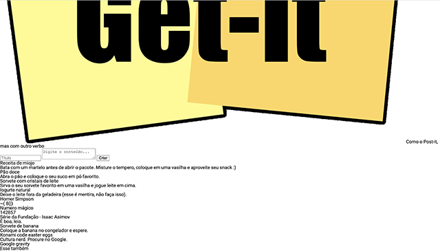
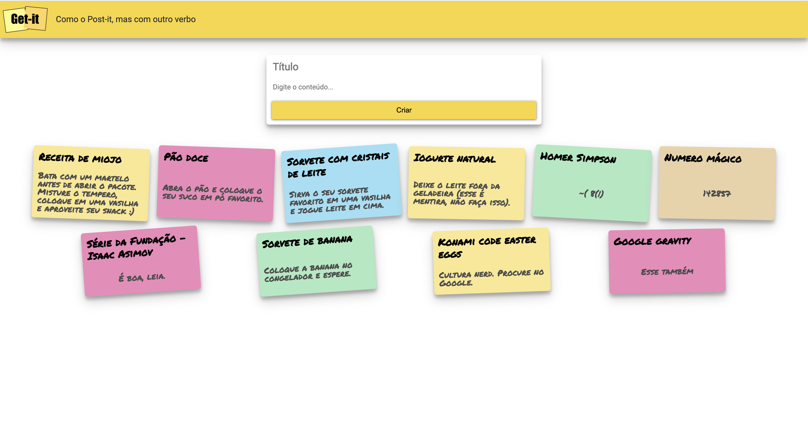

02 - Desafio CSS
Desafio CSS
Entrega
 23/02 (segunda-feira)
23/02 (segunda-feira)
 Commits até as 23:59
Commits até as 23:59
Trios, duplas ou individual
Entrega via GitHub Calssroom
Importante: Todos os integrantes do grupo devem possuir contribuições no código.
Objetivo
{kind=link}

Na aula passada nós desenvolvemos a primeira versão do nosso primeiro site, o Get-it. Na aula de hoje nós vamos focar no estilo da página para relembrar e aprender alguns conceitos de CSS.
O seu objetivo é se aproximar o máximo possível da página a seguir utilizando apenas CSS puro.
{kind=link}

Cores dos Cards

ATENÇÃO!
O gif acima mostra a página sendo recarregada manualmente diversas vezes.
A animação é apenas para mostrar que a cada vez que a página é carregada, os elementos mudam de cor e rotação aleatoriamente. Não se preocupe, o javascript responsável pela aleatorização já está pronto.
Exercício
Inspecione um card no navegador e veja procure pela classe CSS que está sendo aplicada para a cor de fundo.
Instruções
- Acesse o github classroom pelo link: https://classroom.github.com/a/h1sj1VrJ
- Você deve modificar apenas o arquivo getit.css.
- Todos os integrantes do grupo devem possuir contribuições no código.
-
 Não é permitido editar os arquivos
Não é permitido editar os arquivos index.htmlegetit.js. - Não é permitido o uso de frameworks CSS (Bootstrap, Materialize, etc).
Dica
Instale a extensão Live Server do Visual Studio Code para visualizar a página HTML.
Entrega
- A entrega deve ser feita via github.
- O grupo deve publicar o resultado no GitHub Pages. Para mais detalhes sobre como publicar no GitHub Pages, faça uma busca com algo do tipo "como publicar uma página HTML no GitHub Pages".
Rubrica
A nota deste trabalho é a soma dos pontos abaixo. Será feita uma inspeção visual, ou seja, os tamanhos, distâncias e cores não precisam ser exatamente iguais, mas devem ser visualmente bastante parecidos:
-
Textos:
- [1 pt] Posição, fonte e cores dos textos corretas
-
App bar:
- [1 pt] Tamanho do logo correto
- [1 pt] Aparência correta (cor e sombra)
-
Formulário:
- [1 pt] Aparência dos campos de texto e do botão correta (fonte, cores, ausência de bordas, etc)
- [1 pt] Aparência do formulário correta (sombra, proporções, distâncias, cantos arredondados, etc)
- [1 pt] Posição do formulário correta (centralizado e com a distância correta com relação aos outros elementos principais)
-
Cartões:
- [1 pt] Espaçamentos corretos
- [1 pt] Cores de fundo corretas
- [1 pt] Aparência do cartão correta (sombra, proporções, distâncias, cantos arredondados, etc)
- [1 pt] Rotação dos cartões
-
Descontos:
- [-1 pt] Página não disponível no GitHub Pages
- No caso de entrega com atraso, a nota ficará limitada a 5 (equivalente ao conceito C).
- A nota de trabalhos com modificações em outros arquivos além do README.md e do
docs/getit.cssserá limitada a no máximo 7 (equivalente ao conceito B). Modificações em outros arquivos devem ser explicitamente aprovadas pelo professor. - Caso não haja contribuição de todos os integrantes do grupo, a nota do grupo ficará limitada a 7 (equivalente ao conceito B).
Observações importantes
- Para este trabalho você não precisa se preocupar com a versão mobile da página. Ela será testada apenas em um monitor.
- A quantidade de cards na primeira linha pode variar de acordo com a resolução da tela, então não se preocupe se a quantidade de cards na primeira linha for diferente da imagem de referência. O importante é que os espaçamentos, cores, rotações e demais características estejam corretas.